¿Que es la Energia? Es la capacidad que tiene la ,ateria al producir trabajo en forma de movimiento, calor o luz etc
Es una magnitud homogenea con el trabajo, por lo que se mide en las mismas unidades, es decir que esta puede
cambiar de manera de procesos de converion energetica. Se mantiene constante conforme al pricnipio de la conservacion
de la energia no se crea ni mucho menos se destrulle solo se transforma
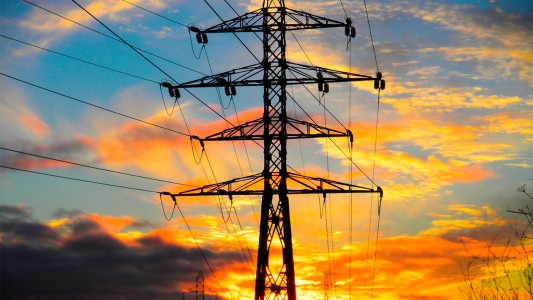
¿De donde proviene la Energia? Casi toda la energia que diponeos proviene del Sol. Es la causa de los vientos, de la evaporacion de las aguas superficiales
de la formacion de las nuves. de las lluvias, y por consiguiente de los saltos de agua
Su calor y su luz son una buena base de la fotosintesis, en el mundo vegetal con la generacion
de el oxigeno y la absorcion de CO2
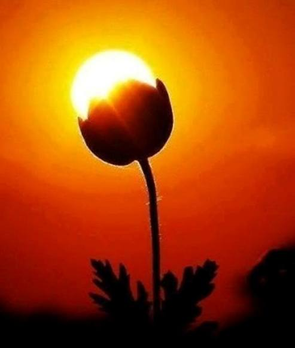
LA MAYORIA DE LAS FUENTES DE ENERGIA ES EL "SOL" Y SE CLASIFICAN EN DOS.
RENOVABLES
SON AQUELAS QUE SE ENCUENTRAN, DE FORMA ILIMITADA EN EL PLANETA.
E N E R G I A S R E N O V A B L E S
Energia Hidraulica Producida por caida de agua. El agua en turbinas pasa por turbinas hidrulicas y transmiten ernergia a un alternador
El agua en turbinas pasa por turbinas hidrulicas y transmiten ernergia a un alternador.
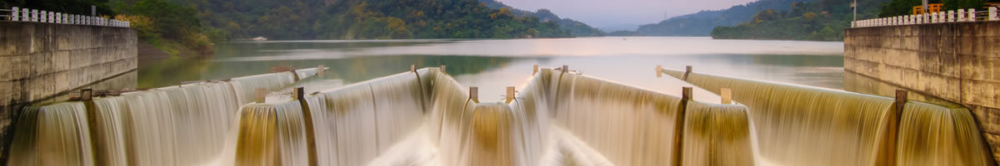
Energia Eolica Es producida por el viento. A travez de los molinos de viento, aprovechan corrientes de aire y se logran transformar en
electricidad
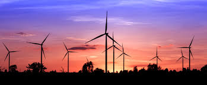
Energia Solar Es el tipo de ernergi que nos proporciona el sol en forma de radiacion electromactentica (luz, calor, rayos ultravioleta principalmente
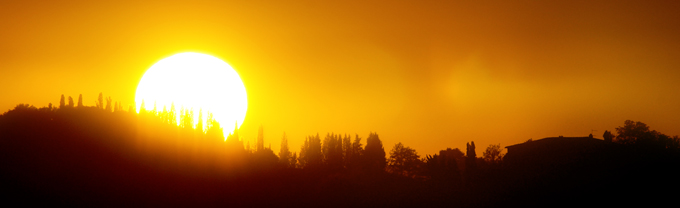
Energia Geotermica Es una de las fuentes de energia renavables menos conocidas y se encuentran almacenadas bajo las superfices terrestes en forma de calor
ligada a volcanes, aguas termanles, famarolas y geiseres.
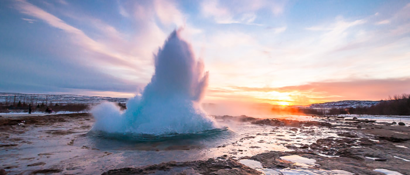
Energia de la Biomasa Procede del aprovechaiento de la materia organica animal y vegetal o de residuos agroindustriales. Inclueye de las actividades tales como
la agricultura, ganaderas y forestales
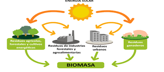
DA CLIK E N E R G I A S N O R E N O V A B L E S
Energia Nuclear Esta es proveniente de las reaaciones nucleares o de la desintegracion de los nucleos de los atomos
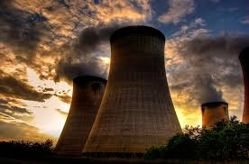
Combustibles Fosiles Son conocidos como el carbon, petroleo y gas natural. Estos han sido grandes protagonostas en la evolucion industrial
Esta esta compuesta por organismos que vivieron hace mucho tiempo.
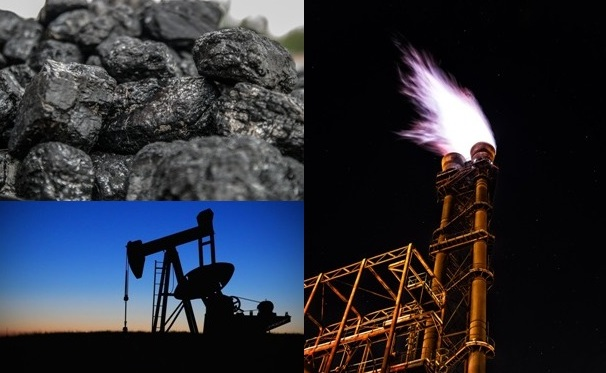
Carbon Mineral de origen organico, , constituido fundamentalmente por carbono. Su vapor puede alcanzar la temperatura cercana de
6000*C.
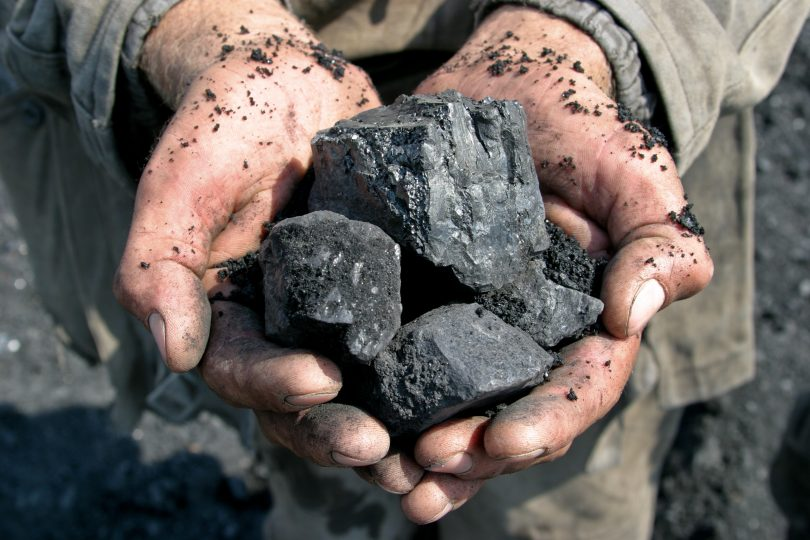
Ventajas y Desventajas de las Energias Renovales
Ventaja Son las mas respetuasas con el medio ambiente. No contaminan y respresentan la alternativa de
energias mas limpias al planeta.
Ventaja Son faciles de desmantelar y no requiern costudiar sus reciduos.
Ventaja Hace que la region sea mas autonoma y se pueda instalas la industria y ganaderia.
Ventaja Son energias seguras, ya que no contaminan ni mucho menos suponen un riesgo a la salud.
Ventaja Se trata de energias, las cuales tienen fuente inagotables.
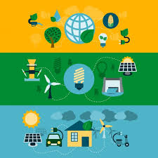
Desventaja No siempre se dispone de ella, ya que hay que esperar un tiempo hasta que haya suficiente almacenamiento
Desventaja Su naturaleza es difusa donde solo es accesible en una cortesa terrestre
Desventaja Hace parecer renovable en poco tiempo
Desventaja Algunas personas le encuentran algun inconveniente pues dependiendo de su espacio, para poder
desarrolarlas de una manera correcta
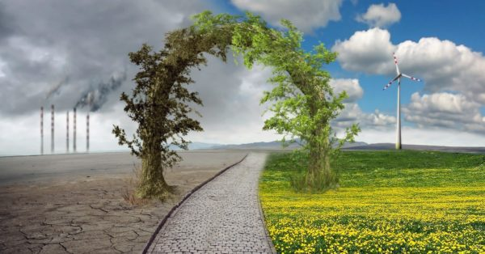
INGRESA
tu nombre:
tu clave: type=password name=clave size=8>